In prima zi a vacantei am vizitat Colosseum, Forumul Roman si Dealul Paladin. Cele trei reprezinta inima Romei antice. Peste 2000 de ani de istorie, simboluri ale Romei si dovada in piatra a unei istorii marete. Am decis ca acestea sa fie primele obiective turistice, atat datorita apropierii de locul unde am fost cazat, cat si pentru ca mi-am dorit enorm sa le vad, fiind foarte sus pozitionate pe lista mea. Cozile la bilete dureaza destul de mult (2-3 ore), dar in final se merita. Legendele spun ca pe dealul Paladin au fost gasiti si crescuti de lupoaica Romulus si Remus, fondatorii eternului oras. Cert este ca vei gasi ruine din anii 1000 i.Hr., dar vei vedea si pietrele de temelie ale imperiului roman: aici, Augustus, primul imparat Roman avea sa construiasca "centrul lumii" si totodata resedinta imparatilor romani pentru multe secole in 27 i.Hr. De asemenea, am vazut si Domus Flavia, Templul lui Apollo, Templul lui Cybele.
In cea de-a doua zi am vazut Piata Venetia si Fontana di Trevi. Figura centrala a Fontanei di Trevi este zeul Neptun, situat intr-un car de lupta tras de caluti de mare. Desigur ca nu am uitat sa arunc o moneda in apa si sa imi pun o dorinta.
A treia zi am dedicat-o vizitarii Vaticanului. Odata intrat in cel mai mic stat din lume, cu o populatie de 832 de locuitori si o suprafata cam de un sfert din Parcul Herastrau din Bucuresti, am vazut Piata San Pietro. Intrarea in muzeele Vaticanului se face ocolind celebra piata. Complexul muzeal al Vaticanului cuprinde 10 muzee pline de picturi, sculpturi, armuri, tapiterii, mozaicuri, vase grecesti, obiecte de arta africana si multe altele. Pe langa acestea, am vizitat si Capela Sixtina, Salile lui Raffaelo, Palatul Belvedere, Sala Doamnelor, dar si celebrul apartament Borgia.
In a patra zi am vazut Panteonul. Construit de generalul Marcus Agrippa si ulterior reconstruit de imparatul Hadrian, Panteonul a fost un templu dedicat tuturor zeilor, iar din secolul al VII-lea a devenit biserica crestina. Este considerata ca fiind cea mai bine conservata cladire romana, iar pana in secolul al XX-lea a fost cea mai mare constructie din beton. A urmat insa spre seara plecarea catre aeroport.
Roma este un oras foarte special, epicentrul istoric al lumii!